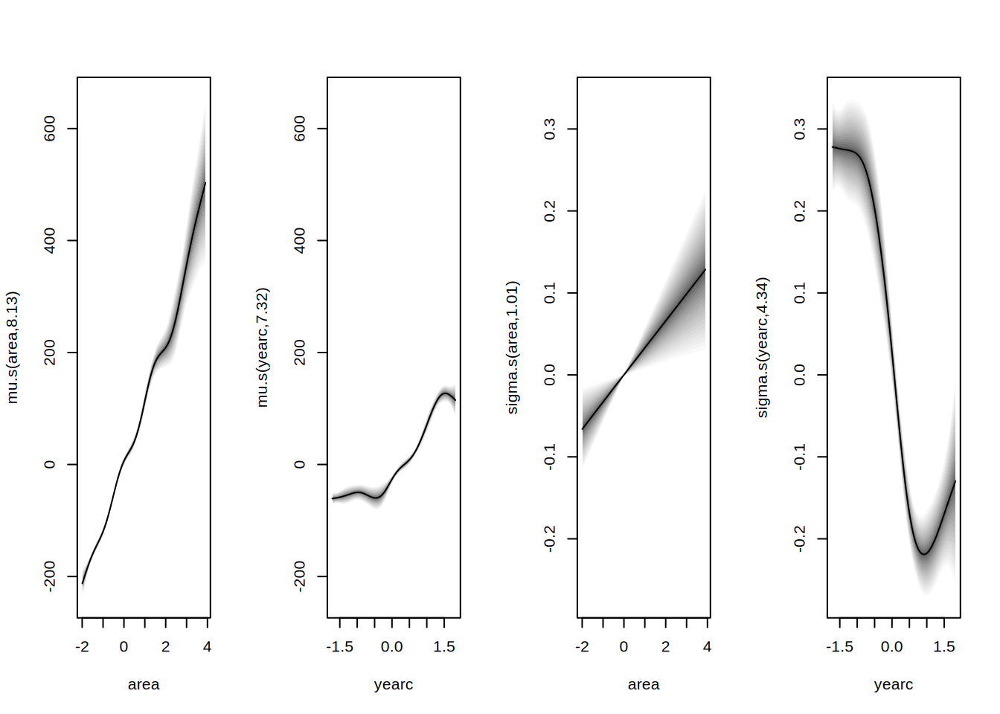
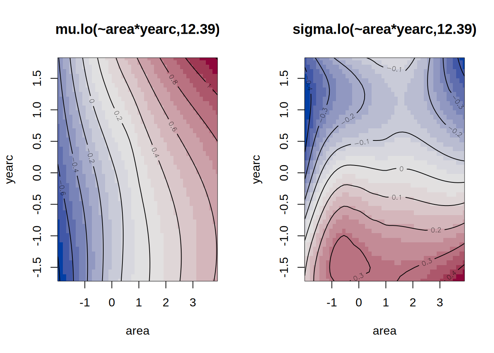
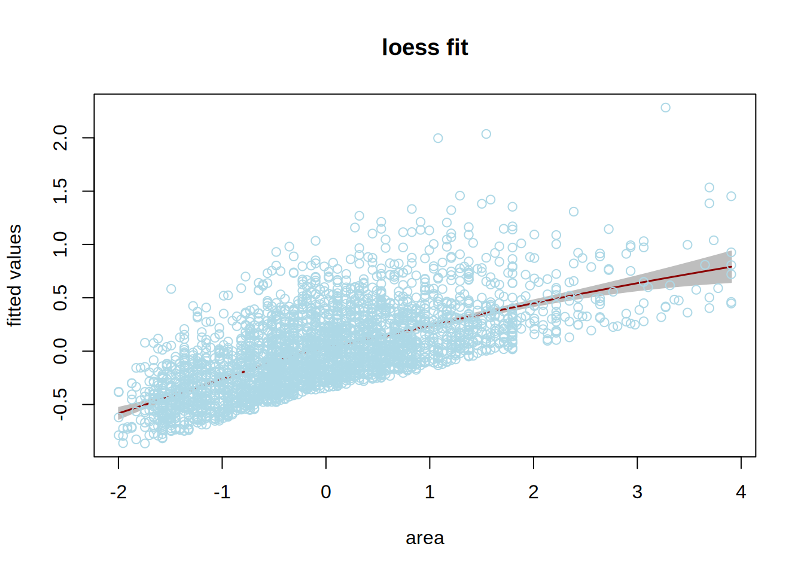
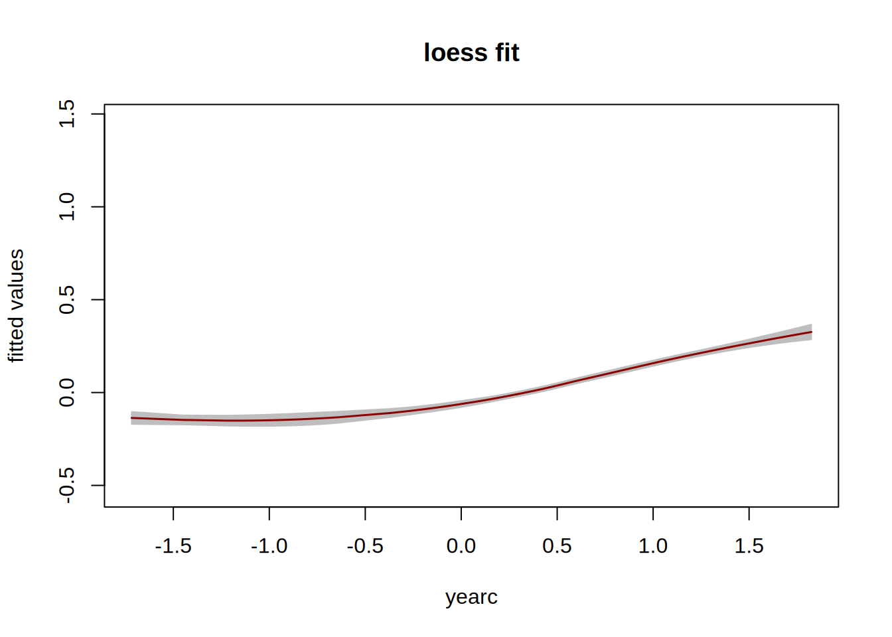

lo <- function(formula, ...)
{
## ensure it's a formula
if(!inherits(formula, "formula")) {
formula <- as.character(substitute(formula))
formula <- as.formula(paste("~", formula))
environment(formula) <- sys.frame(-1)
}
## list for setting up the special model term
st <- list()
## control arguments
st$control <- list(...)
## variables, label and data
st$term <- all.vars(formula)
st$label <- paste0("lo(", paste0(gsub(" ", "",
as.character(formula)), collapse = ""), ")")
st$data <- model.frame(formula)
## New model formula used for fitting.
st$formula <- update(formula, response_z ~ .)
## Assign the "special" class and the new class "n".
class(st) <- c("special", "lo")
return(st)
} Special Model Terms
In order to add any new machine learning type algorithm in gamlss2 you need to define three special functions:
- A special term constructor function,
- a fitting function and,
- a predict function.
Here we demonstrate how this can be done using the local polynomial smoothing function loess() in R, Cleveland, Grosse, and Shyu (1993).
Note that any regression type machine learning function is R can be easily incorporated in gamlss2 especially if there is a prior weights argument in the function. loess() has the argument weights for prior weights so it can be incorporated easily.
1 The special model term constructor
Any special model term constructor must be registered in the fake_formula() function. If not yet registered, the user can provide a new special name in the specials argument of fake_formula(). Another option is to use the special model term constructor name ‘“user”’, which is already part of the special names list in fake_formula().
The definition function can take all relevant loess and loess.control arguments so it can pass them into the fitting function.
2 The fitting function
The fitting function takes the current working response, the iterative weights and the corresponding relevant term and creates a call to the loess function to fit the relevant model. It then saves the fitted values and the fitted objects for later use.
special_fit.lo <- function(x, z, w, control, ...)
{
## assign current working response and weights
x$data$response_z <- z
x$data$weights_w <- w
## set up loess call
call <- "loess(formula = x$formula, data = x$data, weights = weights_w"
## add optional control parameters
if(!is.null(x$control)) {
for(j in names(x$control))
call <- paste0(call, ", ", j, "= x$control$", j)
}
call <- paste0(call, ")")
## estimate model
rval <- list("model" = eval(parse(text = call)))
## get the fitted.values
rval$fitted.values <- fitted(rval$model)
## center fitted values
rval$shift <- mean(rval$fitted.values)
rval$fitted.values <- rval$fitted.values - rval$shift
## degrees of freedom
rval$edf <- rval$model$trace.hat
## assign class for predict method
class(rval) <- "lo.fitted"
return(rval)
}3 The predict function
The prediction function shows how the predicted values of the model can be extracted.
special_predict.lo.fitted <- function(x, data, se.fit = FALSE, ...)
{
p <- as.numeric(predict(x$model, newdata = data))
p <- p - x$shift
if(se.fit)
p <- data.frame("fit" = p)
return(p)
}4 Example: rent99 data
We use the rent99 data to demonstrate the use of the functions
## load the Munich rent data
data("rent99", package = "gamlss.data")
## scale covariates
rent99$area <- scale(rent99$area)
rent99$yearc <- scale(rent99$yearc)Note that the continuous variables in the data area and yearc have been standardised. We defined four formulae for modelling the rent data. The first two use loess and the third and fourth uses the additive smoothing function s() for comparison. Formula f uses main effect smoothing terms for area and yearc for parameters \(\mu\) and \(\sigma\), respectively, while the second, f1, uses two dimensional smoothing functions for modelling one way interaction. The third formula uses one dimensional smoother for main effects and the fourth two dimensional cubic splines smoothers for interactions. Note that in this example we only use explanatory terms for the first two parameters \(\mu\) and \(\sigma\) and constants for the rest, \(\nu\) and \(\tau\).
f <- rent ~ lo(~area)+lo(~yearc)+location+bath+kitchen|
lo(~area)+lo(~yearc)+location+bath+kitchen|
1|1
f1 <- rent ~ lo(~area*yearc)+location+bath+kitchen|
lo(~area*yearc)+location+bath+kitchen|
1|1
sf <- rent ~ s(~area)+s(~yearc)+location+bath+kitchen|
s(~area)+s(~yearc)+location+bath+kitchen|
1|1
sf1 <- rent ~ te(area,yearc) + location + bath + kitchen |
te(area,yearc) + location + bath + kitchen |
1|15 Estimation
Below we use the package tictoc to measure the time is taken to fit each model. The main effect fit for loess is;
library("tictoc")
tic()
b1 <- gamlss2(f, data = rent99, family = BCTo) GAMLSS-RS iteration 1: Global Deviance = 38409.6672 eps = 0.286141
GAMLSS-RS iteration 2: Global Deviance = 38363.6237 eps = 0.001198
GAMLSS-RS iteration 3: Global Deviance = 38360.7687 eps = 0.000074
GAMLSS-RS iteration 4: Global Deviance = 38359.9016 eps = 0.000022
GAMLSS-RS iteration 5: Global Deviance = 38359.6113 eps = 0.000007 toc()4.731 sec elapsedThe first order interaction fit for loess is;
tic()
b2 <- gamlss2(f1, data = rent99, family = BCTo) GAMLSS-RS iteration 1: Global Deviance = 38410.5652 eps = 0.286125
GAMLSS-RS iteration 2: Global Deviance = 38359.84 eps = 0.001320
GAMLSS-RS iteration 3: Global Deviance = 38356.7695 eps = 0.000080
GAMLSS-RS iteration 4: Global Deviance = 38355.8814 eps = 0.000023
GAMLSS-RS iteration 5: Global Deviance = 38355.6119 eps = 0.000007 toc()8.302 sec elapsedNow the main effect model using s()
library(tictoc)
tic()
a1<- gamlss2(sf, data = rent99, family = BCT) GAMLSS-RS iteration 1: Global Deviance = 38462.44 eps = 0.285216
GAMLSS-RS iteration 2: Global Deviance = 38414.9787 eps = 0.001233
GAMLSS-RS iteration 3: Global Deviance = 38411.2225 eps = 0.000097
GAMLSS-RS iteration 4: Global Deviance = 38409.6335 eps = 0.000041
GAMLSS-RS iteration 5: Global Deviance = 38409.0103 eps = 0.000016
GAMLSS-RS iteration 6: Global Deviance = 38408.8217 eps = 0.000004 toc()1.133 sec elapsedThe interaction model using te()
library(tictoc)
tic()
a2<- gamlss2(sf1, data = rent99, family = BCT) GAMLSS-RS iteration 1: Global Deviance = 38433.744 eps = 0.285749
GAMLSS-RS iteration 2: Global Deviance = 38391.1221 eps = 0.001108
GAMLSS-RS iteration 3: Global Deviance = 38388.3527 eps = 0.000072
GAMLSS-RS iteration 4: Global Deviance = 38387.4626 eps = 0.000023
GAMLSS-RS iteration 5: Global Deviance = 38387.1819 eps = 0.000007 toc()1.249 sec elapsedThe cubic spline function is lot faster than the loess() implementation lo() in gamlss2, but let us now compare the models using AIC.
## deviance
AIC(b1, b2, a1, a2, k = 0) AIC df
b2 38355.61 36.77363
b1 38359.61 33.15714
a2 38387.18 33.61847
a1 38408.82 32.80415## BIC
AIC(b1, b2, a1, a2, k = log(nrow(rent99))) AIC df
b1 38625.97 33.15714
b2 38651.03 36.77363
a2 38657.25 33.61847
a1 38672.35 32.80415It seems that the two lo() models do better that the s() as far as the AIC criteria are concern.
6 Visualise the fits
The standard plot() function of gamlss2 can be used to visualises the smooth curves fits (under certain circumstances). For example for the main effect model using lo() we have;
plot(b1)Note that no standard errors are shown here compare to the s() function model shown below;
plot(a1)
For the first order interaction model b2 and because the effects are not defined within gamlss2 calling plot() produces the standard residual plots;
plot(b2)
For the first order interaction model a2 using tensor products the plot are more informative;
plot(a2)One can use the function vis.lo() of the package gamlss to visualised the fitted terms fitted with lo(). Here we show the area fitted values for parameter \(\mu\) and model b including the partial residuals from the model.
gamlss:::vis.lo(specials(b1, model="mu")[[1]]$model, partial = TRUE)
Next we show the year of construction yearc fit for parameters \(\mu\) from model b without partial residuals.
gamlss:::vis.lo(specials(b1, model = "mu")[[2]]$model, partial = FALSE)
Here we plot the fitted surface fit from model b2 and parameters \(\mu\);
gamlss:::vis.lo(specials(b2, model = "mu")$model, partial = FALSE)Here we plot the same fitted surface as above adding a 95% confidence intervals;
gamlss:::vis.lo(specials(b2, model = "mu")$model, se = 1.97)
Finally we plot the fitted surface fit from the \(\mu\) model of b2 adding the partial residuals.
gamlss:::vis.lo(specials(b2, model = "mu")$model, partial = TRUE)Note that similar plots are given in section 9.6.3 of Stasinopoulos et al. (2017), where the lo() function within package gamlss, is described.
References
Cleveland, W. S., E. Grosse, and M. Shyu. 1993. “Local Regression Models.” In Statistical Modelling in s, edited by J. M Chambers and T. J Hastie, 309–76. Chapman & Hall: New York. https://www.taylorfrancis.com/chapters/edit/10.1201/9780203738535-2/statistical-models-john-chambers-trevor-hastie.
Rigby, R. A., and D. M. Stasinopoulos. 2005. “Generalized Additive Models for Location, Scale and Shape.” Journal of the Royal Statistical Society C 54 (3): 507–54. https://doi.org/10.1111/j.1467-9876.2005.00510.x.
Stasinopoulos, D. M., R. A. Rigby, G. Z. Heller, V. Voudouris, and F. De Bastiani. 2017. Flexible Regression and Smoothing: Using GAMLSS in R. Boca Raton: Chapman & Hall/CRC. https://doi.org/10.1201/b21973.